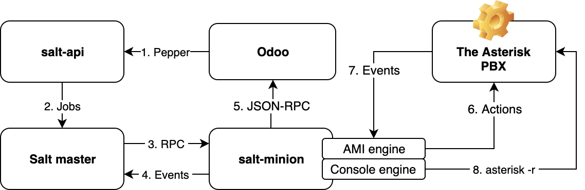

Developer Guide Introduction¶
Introduction¶
OdooPBX platform stands on three whales:
Odoo
Asterisk
There is no direct connection between Odoo & Asterisk. A special middleware process is in between that we call the Salt minion. So it is a full Asterisk connector based on Salt platform.
It is a very good idea to check Saltstack’s Get started page to get a better understanding what Salt is. Because Salt is what makes OdooPBX not just a product but a platform.
The minion is usually run on the same server with Asterisk and it connects to the Asterisk Manager Interface (AMI) and forwards AMI messages to the Salt’s event bus.
Then the Salt’s reactor system forwards the events to Odoo using JSON-RPC connection.
The AMI Events that are sent to Odoo by the minion are configured in Asterisk Plus settings. So the only one requirement that needs to be done in order to start handling AMI events in Odoo is an XML data where it is defined.
Note
With OdooPBX you create phone applications writing 100% Odoo code.
Here is a little more detailed picture on the OdooPBX architecture.
1. The pepper¶
Salt and pepper are friends :-)
Pepper contains a Python library for accessing a remote salt-api instance.
Using pepper Odoo communicates with Salt.
2. Salt jobs¶
Salt API process sends jobs to the Salt master which in turn submits them to connected minions (hello multi server ;).
This is non-blocking process. So Odoo worker does not wait for any reply from the minion (Asterisk). And this is a very important pattern as Odoo cannot be affected by Asterisk outages. When something wrong happens with the connection with Asterisk Odoo just works as normal.
When a job comes to the minion it is executed and the result is sent to Odoo using so called Salt outputter. Below we will talk about them more. Here we should understand that minion has a direct JSON-RPC connection to Odoo and sends the job result directly.
Odoo can call any Salt function. But in OdooPBX we usually call asterisk related functions
from asteriskmod.py execution module.
The most often job that is called from Odoo is asterisk.manager_action with an
Action as a parameter.
And the most often AMI action is Originate. Here is an example of a click-to-call button:
action = {
'Action': 'Originate',
'Context': 'from-internal',
'Priority': '1',
'Timeout': 60000,
'Channel': 'SIP/101',
'Exten': '100',
'Async': 'true',
}
server.local_job('asterisk.manager_action', action)
This is how Odoo creates (originates) a call in Asterisk.
Now check more then 158 Asterisk Actions and get the idea what can be integrated in your Odoo with few lines of code.
3. Remote execution¶
Salt jobs are executed by minion. But the power comes also from the command line availability of all Salt execution modules.
That means you can call your modules not only from Odoo code but from the command line.
It’s really cool! You just have a standard access to whatever you want to do.
Here is an example of calling an AMI action just from the linux console:
salt-call asterisk.manager_action '{"Action":"Ping"}'
and here is the reply:
local:
|_
----------
ActionID:
action/41b3c854-edd2-4c91-805e-37a4fcc36af9/1/2
Ping:
Pong
Response:
Success
Timestamp:
1633553955.999050
content:
So it’s also easy to get current channels or connected SIP peers and pass it to the
awk or grep for crafting your own administrator scripts.
4. Events¶
Salt has two event buses :-)
Note
Check Salt’s event system.
One is minion’s event bus (local) and the second is master’s event bus.
You can monitor both of them.
To spy on what is going on on the minion’s event bus enter run on the server where the minion is:
salt-call state.event pretty=True node=asterisk
Note! Replace asterisk to you server ID :-)
You will get the following:
ami_action {
"Action": "Ping",
"_stamp": "2021-10-06T21:11:28.975648",
"as_list": null,
"reply_channel": "c2e0d83e2e174725a0d630be2565bfb7",
"timeout": 5
}
ami_reply/c2e0d83e2e174725a0d630be2565bfb7 {
"Reply": [
{
"ActionID": "action/9af2316c-2593-4976-a069-e74d577e3d63/1/4",
"Ping": "Pong",
"Response": "Success",
"Timestamp": "1633554688.994160",
"content": ""
}
],
"_stamp": "2021-10-06T21:11:28.999119"
}
To spy on master’s event run:
salt-run state.event pretty=True
And you will get:
20211006210940034674 {
"_stamp": "2021-10-06T21:09:40.035997",
"minions": [
"asterisk"
]
}
salt/job/20211006210940034674/new {
"_stamp": "2021-10-06T21:09:40.036804",
"arg": [],
"fun": "test.ping",
"jid": "20211006210940034674",
"minions": [
"asterisk"
],
"missing": [],
"tgt": "asterisk",
"tgt_type": "glob",
"user": "odoo"
}
salt/job/20211006210940034674/ret/asterisk {
"_stamp": "2021-10-06T21:09:40.187263",
"cmd": "_return",
"fun": "test.ping",
"fun_args": [],
"id": "asterisk",
"jid": "20211006210940034674",
"retcode": 0,
"return": true,
"success": true
}
5. Minion’s connection to Odoo¶
Every minion is configured to an Odoo instance.
When it executes a job its result is sent to Odoo.
As a developer you could ask what happens if Odoo is down.
Currently nothing will happen. Asterisk event will be lost.
In future some queue will be implemented to keep some (not all) Asterisk events and send them to Odoo when it’s available. But some events are too late to be send.
For example we want all CDR events but there is no sense to re-send SIP presense event as it’s not actual.
6. AMI Actions¶
Here we should understand how salt job callback pattern works. As we use non-blocking calls Odoo method that calls AMI Originate is finished immediately after transmitting it to the Salt master.
But what if user did not respond or bad number format was dialed?
Here is a full snippet:
def originate(self, number, trunk, exten, context)
action = {
'Action': 'Originate',
'Context': context,
'Priority': '1',
'Timeout': 60000,
'Channel': '{}/{}'.format(trunk, number),
'Exten': exten,
'Async': 'true',
}
server.local_job(
'asterisk.manager_action',
action,
res_model='asterisk_plus.server',
res_method='originate_call_response'
pass_back={'uid': self.env.uid},
)
@api.model
def originate_call_response(self, data, pass_back):
debug(self, 'Originate', data)
if data[0]['Response'] == 'Error':
self.env.user.asterisk_plus_notify(
data[0]['Message'], uid=pass_back['uid'], warning=True)
You should pay attention at res_model and res_method parameters of local_job function.
When AMI Originate fails it returns a response with an error message.
This response is delivered out of the originate function.
This is so called callbacks pattern. You call an action and specify what function will receive the result when it’s done.
7. AMI events¶
See full list of events here.
Just create XML-data files with your desired events and write Odoo code to handle them.
<record id="cdr" model="asterisk_plus.event">
<field name="name">Cdr</field>
<field name="source">AMI</field>
<field name="model">asterisk_calls.call</field>
<field name="method">create_cdr</field>
</record>
Then just create a method in Odoo:
@api.model
def create_cdr(self, event):
get = event.get
self.create({
'accountcode': get('AccountCode'),
'src': get('Source'),
'dst': get('Destination'),
'dcontext': get('DestinationContext'),
'clid': get('CallerID'),
'channel': get('Channel'),
'started': get('StartTime') or False,
'answered': get('AnswerTime') or False,
'ended': get('EndTime') or False,
'duration': get('Duration'),
'billsec': get('BillableSeconds'),
'disposition': get('Disposition'),
'uniqueid': get('UniqueID') or get('Uniqueid'),
'linkedid': get('linkedid'),
'userfield': get('UserField'),
})
return True
That’s it. Now you have Asterisk call statistics in Odoo without programming anything outside Odoo.
8. Asterisk console¶
What is fun with OdooPBX is that you have a full featured color console right in your Odoo.
You can enter Asterisk commands there or even enter ‘!’ and exit into Linux shell for deep
debugging like running sngrep SIP sniffer for example or troubleshooting
RTP with tcpdump.
Conclusion¶
It was a brief introduction to OdooPBX development.
Check other developer documentation and have a fantastic experience with OdooPBX platform!